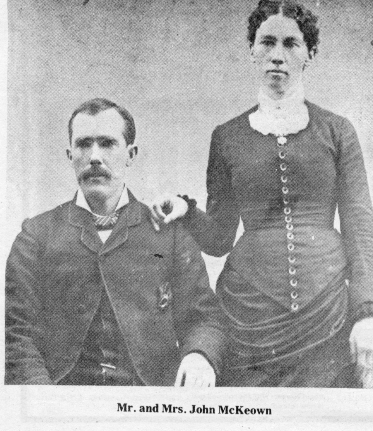

James Perry Webster, the man for whom this city was named, settled here about 1880. In 1963, his granddaughter sent the Reporter and Farmer some information about him. Here is her story.
James Perry Webster, the son Cyrus and Martha Webster, was born in Boston, Summit County Ohio, Sept. 1, 1837. Very little is known of his early life, but in the spring of 1880, James, his father-in-law, Enos Babcock, and brother-in-law, Frank Deavereaux and their families traveled by covered wagon from Pine Island, Minn. to the plains of South Dakota.
Until a permanent home could be built, James his wife Wilmina and their three children, George, Cora and Clara, lived in a tent on a 160-acre tree claim. Webster is now located on that tent site. Since there were very few trees, lumber to build the Webster home and farm buildings had to be brought by team and wagon from Watertown. After settling his family in the tent, James and his son George, then nine years old, prepared for a trip to Watertown to buy lumber, groceries and tree seedlings for planting.
Before leaving, James told Wilmina not to worry about In- dians, because the ones in the vicinity were friendly. But Wilmina was uneasy anyway; her nearest neighbor was five miles away and she did not relish the thought of being left alone with two small girls in strange country.
The second day that James was gone, Wilmina saw a caravan of horses and wagons in the distance. Soon a wagon stopped near the tent, and an Indian chief approached. Standing in front of the tent, he reached inside his coat. Wilmina expected him to draw a weapon, but instead he pulled out a slip of paper and handed it to the terrified woman. The note said the Indians were friendly, and meant no harm. James arrived home a few days later and later hired some of those Indians to help with work and tree planting. They were able workers and helped on the Webster farm for many years. After the Websters built their. home, James built a country store and Wilmina fed the families and single men moving to South Dakota territory. After the railroad came to Webster, James became an insurance agent.
Ten years after arriving in South Dakota, the Websters returned to Minnesota, where James became a traveling salesman. He died Dec. 27, 1906 in Waite Park, Minn. at age 69.
The Graduating Class of 1894. L-R Edith Lumer, Maude Abbott,
Emma Warner, Ida Gilbert and Eva Warner.
Road building was important work in the early days of Day County. These pictures were taken in 1927 using state-of-the art road building equipment.
John McKeown and his wife Mary (Burke) McKeown were pioneers in Day County. They had seven children.
McKeown children L-R Back John, Isabelle, James Bottom: William and LeoThe younger of the McKeown were Phil and Edmond.
One or more of the Steve Pearson family has lived in Webster continuously through all but the very earliest years of the 100-year life of Webster. The history of this family is probably quite typical of a family which had an immigrant as the male parent, the principal bread winner. Steve was an immigrant from Sweden. His wife, Agnes (Flagstad) was born in Ortonvile, Minn. in 1884. Steffan Perrson, Steve Pearson as he came to be known in America, was born in Varmiand in 1877, the son of Per and Ingard (Anderson) Pearson. His father was a farmer.
Vilhelm Mobery in his books, "The Emigrants" and "Unto A Good Land" describes the economic and social conditions in Scandinavia which caused thousands of Swedes and Norwegians to migrate to America during the last half of the 19th century. A farm boy, unless he was the eldest, would not inherit the farm and had almost no chance of finding work in a city because Sweden had not at that time developed the steel, glass and paper industries which were to bring prosperity to the country.
Sons of farmers, except for the eldest, were turned over to very large land owners and became little better than indentured servants. When a young lad reached maturity, which was considered to be when he reached the age of 15 and was confirmed in the Lutheran Church, he was expected to break away from his family home and support himself.
Steve's father was determined that Steve should not suffer the fate of most farm boys so he offered to send him to "the good land". As Steve set forth his father handed him a coin purse containing a small amount of money for emergencies. Steve's destination was Pipestone, of earing horses so he moved west to Webster His first employment, however, was that of the delivery boy for the Chilson & Haugen Store with the responsibility for caring for the horse. Before long Steve had learned to speak English well enough to move into the store as a clerk. Later he served as a clerk in George Boldes Clothing Store.
His longest employment by a private firm started when he became manager of the Equity Elevator, the first of a number of elevators along the railroad tracks east of Main Street. Steve managed elevators for different firms, including Bagley and Potter, Garrick, & Potter and in other towns, Andover and Marvin. It was a happy day for his family when he started earning $75.00 per month.
In 1916 he sought the Republican nomination for the office of Clerk of the Circuit Court. In that day the nominees were selected by party conventions. He won the nomination but lost the election to Bert Johnson, the incumbent. In a second try in 1918 he was elected and held the office for 22 years. In 1940 he joined with two of his sons in starting a second hand furniture and clothing store in the building just south of ·the Reporter and Farmer.
When Will A. Wells ceased publishing the Webster Journal and the Kading Building, which now is the American Legion Hall, became available Pearson rented it, establishing a variety store on the main floor and continuing the second hand furniture business in the basement.
Steve and Agnes, the daughter of Julius and Anna Hanson Flagstad, were married June 9, 1902. The Flagstad family had moved to Webster from Ortonville in 1887. Agnes and Inez (Egeland) Cook became the f9irst telephone operators ("hello girls") in Webster, serving the local telephone company which was organized and managed by A.W. Ross. The switchboard and office was located in a part of the Harris building which stood whee the Tjelle Recreational Parlor now stands. At various times this building housed Dr. J.L. Harris' office, the telephone company, Halbkat's Drug Store, Ross Jewelry Store, the office of Dr. H.J. Herman, and Henry O'Ready's Five and Ten-Cent Store.
The first all modern home for the Pearsons was once owned by Dr. M.M. Judge. It was located south of Judge's livery stable on the corner of 1st St. and 5th Avenue West. It was an exciting place to live because at each end of the block there was a livery stable, and when one turned toward Main Street on 6th Avenue there were livery stables on each side of the block. Many interesting, scarey men hung around those places.
The Judge house was also the route home for many who had a few drinks too many at the Miller saloon, which was located where the old creamery building, now an auto parts store, stands.
Instead of buying ready made clothes for herself or the children, Agnes hired Emma Schultz, a seamstress and sister of John Schultz who was at one time a banker in Waubay and later became the manager of the Peabody Hospital, who came and stayed in the home for a week or longer to make or alter clothes. The children were never very happy when Emma came in the spring and fall because she was a strict disciplinarian. The children particularly resented her forcing them to eat every scrap of food on their plates whether they liked it or not, preaching to them about the starving Armenians. Homegrown food
When the children were small Steve grew most of the vegetables used during the winter. Potatoes, beets carrots and parsnips were kept in a bin of sand in the cellar. The children were expected to keep the garden free from weeds and potato bugs. Sometimes Steve paid children as much as a penny for every ten bugs picked from the potato plants.
Agnes spent long days and nights canning and preserving other vegetables and fruit. Neighbors like the Hammerbachers, Albert Smiths, Comptons and Duntons allowed children to pick the currants, gooseberries and chokecherries in their yards and these with wild plums which Indians peddled from door to door were made into jam and jelly.
The cabbage from the garden was taken to Mrs. Gus Lundgren, a German lady who lived south of the tracks, who made a ten gallon crock of sauerkraut for the Pearsons. She also made headcheese and blood sausage which Steve bought but which children would never touch.
Several crates of peaches, a bushel of pears, and basket of grapes became the desserts for the winter. All of this was done a woodburning cook stove without benefit of artificial pectin. In those days before supermarkets provided packaged foods the children rushed home to smell the wonderful aroma of fresh baked bread hoping that they might some in time to spread the butter over the still hot loaves and hear the crust crackle. p
And before the days of electric appliances and indoor plumbing and furnaces it might seem that life was crude and devoid of culture. Quite the opposite was true. People found time for the amenities. They were more courteous, gentle and fastidious reflecting it in their demeanor and dress.
Agnes took voice lessons, had beautiful singing voice and loved to sing. Remembered particularly are the songs she sang to children as they helped her wash the dishes and do other kitchen chores.
When the family could afford it, tickets were bought for the Chautauqua, a week-long series of lectures and music programs held in a tent which was pitched on the lots now occupied by the Catholic Convent. The Episcopal Church was often served by a young unmarried vicar whom Steve invited to dinner following the Sunday service. Decorum was the rule, and if the children got out of line they learned about it following the vicar's departure.
Steve must have learned much about proper American customs from his association with a number of fraternal organizations. During those early years at the turn of the century, lodges were the center of much of the social life of rural communities. In keeping with Steve's desire to do as Americans do, he joined practically every lodge that organized a chapter in Webster, including the Knights of Pythias, Woodman, Odd Fellows and Masons. While other lodges disbanded in later years the Masonic bodies continued and Steve was a member for more than fifty years.
Steve died in 1965, 88 years old. About five years before his death he returned to Sweden for a visit.
Ten children were born into the Pearson family. Lynn, who was born in 1905, died from diphtheria in 1908. Richard, born in 1921, died from scarlet fever in 1923. .Julian, the first born, died in 1971 at the age of 69. Inez (Mrs. Peter Spehr) lives in Columbus, Md. Robert lives in Webster, Frank lives in Wahpeton, N.D. and Margaret, (Mrs. Dallas Butterbrodt) lives in Watertown. David lives in Brookings, Patricia lives in Watertown during the school year and in Webster during vacation periods. Joan (Mrs. John Kelly) lives in Bellefontaine, Ohio.